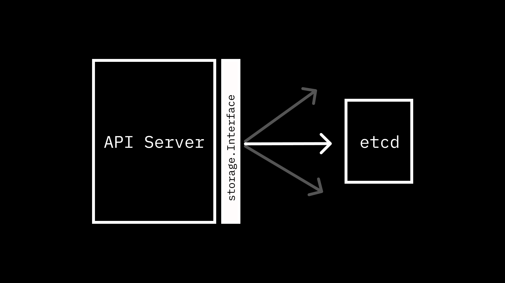
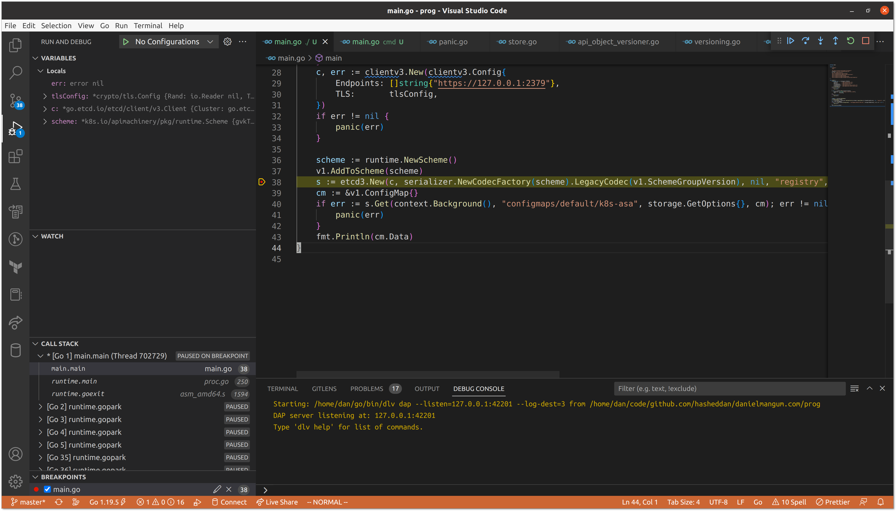
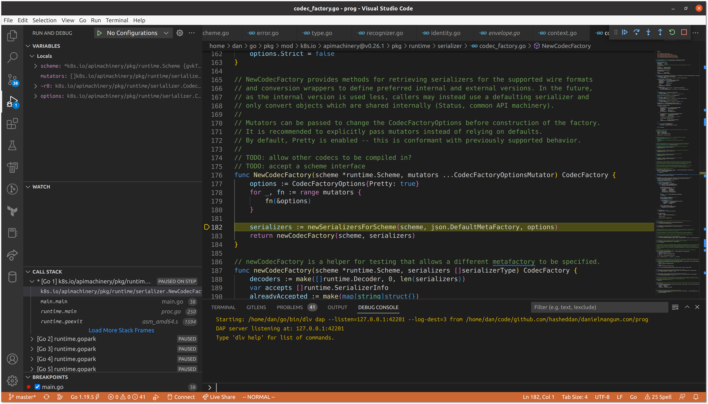
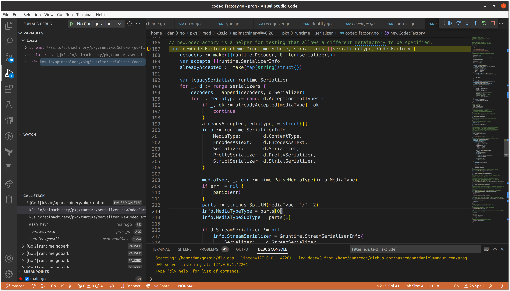
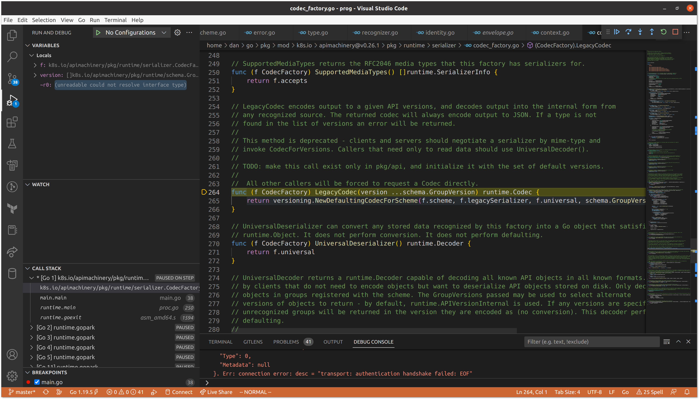
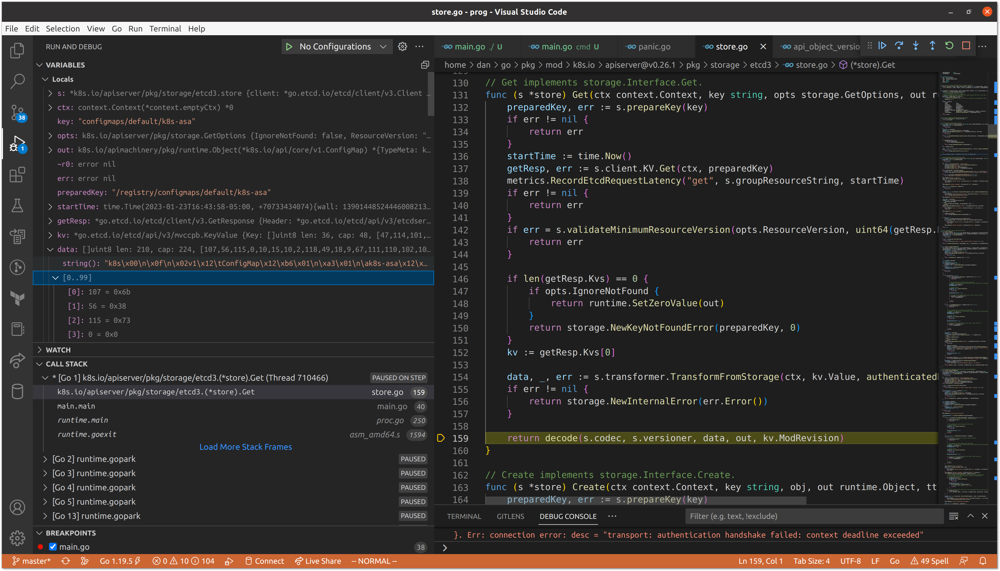
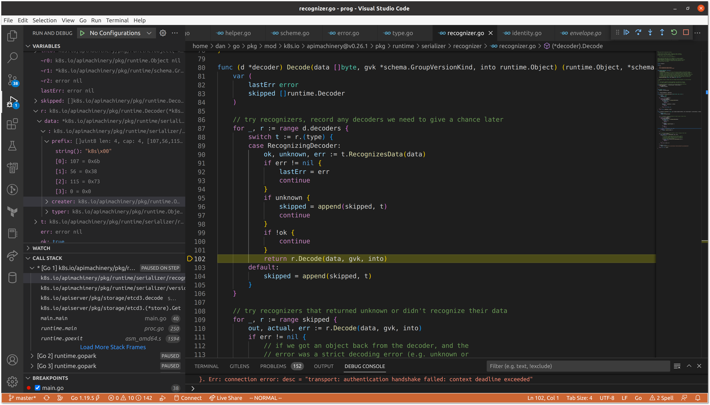
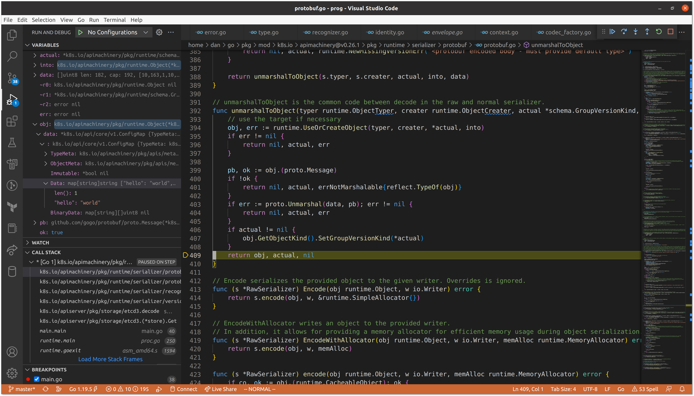

Like most API servers, a, if not the, primary function of the Kubernetes API Server is to ingest data, store it, then return it when requested. Today we are going to be focusing on how the API Server stores data.

Table of Contents:
- The
apiserverModule (👈 “I want all the details.”) - The
storagePackage - Our Good Friend
etcd - The API Server and
etcd - Calling
storage.InterfaceDirectly (👈 “Can we skip the background info?”)- Devising a
runtime.Scheme - Encoding and Decoding
- Undergoing Transformation
- Finding Our
ConfigMap(👈 “I am a busy person.”)
- Devising a
- Closing Thoughts
The apiserver Module
Link to heading
For the first few posts in this series, we are going to be focusing on a single module in the Kubernetes code base. The apiserver module is a self-described “generic library for building a Kubernetes aggregated API server.” It includes a set of packages that provide generic1 functionality that you would expect for an API server: audit, authentication, authorization, and more. Some of these packages nest additional packages, following the familiar pattern of offering an interface, then one or more concrete implementations of the interface. One such example is the storage package.
The storage Package
Link to heading
The storage package is, well, for storing data. Or if you want to be more formal about it, provides “interfaces for database-related operations.” At the center of the aforementioned interfaces is storage.Interface, which “hides all the storage-related operations behind it.” For being such a foundational component in the layers of the API Server, the interface is really quite straightforward, exposing only 8 methods, mostly for operations that would be expected for storage and retrieval. These methods include:
Versioner() Versioner
Versioner is an accessor method that returns an implementation of the Versioner interface, also provided by the storage package, used to abstract the versioning of resources when modified.
Create(ctx context.Context, key string, obj, out runtime.Object, ttl uint64) error
Create is responsible for adding data in the form of a runtime.Object to the underlying storage implementation with the provided key. It supports setting a “time to live” (ttl) if the data for the key should be expired after some period, and allows for passing a separate runtime.Object (out) that should be used to represent the object’s state after being prepared and stored.
Delete(ctx context.Context, key string, out runtime.Object, preconditions *Preconditions, validateDeletion ValidateObjectFunc, cachedExistingObject runtime.Object) error
Delete is responsible for removing data at the given key, and returning the data in the form of a runtime.Object. It allows setting preconditions that must be met for the operation to be successful (object UUID and ResourceVersion may be supplied), as well as an object validation function (validateDeletion). The latter is a simple hook in the form of func(ctx context.Context, obj runtime.Object) error that should return an error if the resource is invalid. The last supplied argument, cachedExistingObject, can be used to optimize the deletion flow in the event that the state of the desired version of the object to be deleted is already known. As you may have already guessed, if the version of the cached object does not match the ResourceVersion in the preconditions, or we fail validation, it could be due to the cached object being stale, in which case we will need to fetch a fresh version before attempting again2.
Watch(ctx context.Context, key string, opts ListOptions) (watch.Interface, error)
Watch returns a watch.Interface that enables observing changes to the data at the provided key over a period of time. The watch interface is a simple, but powerful abstraction, supporting only two operations (ResultChan() <-chan Event and Stop()) that offer a high degree of leeway to the implementation. However, the ListOptions, which allow specifying the resource version at which to start the watch, among other things, leak a bit of the underlying implementation with options like Recursive bool, which indicate that the provided key is a prefix and all objects that match should be included in the watch. If you have ever provided the -w (“watch”) flag when performing a kubectl command, especially if you have tried to watch across multiple types, you may have seen a response like error: you may only specify a single resource type. This is an example of the underling storage engine and the organization of the data within it flowing through to the end-user experience.
Get(ctx context.Context, key string, opts GetOptions, objPtr runtime.Object) error
Get retrieves data at the given key and returns it in the objPtr. Options allow for ignoring errors related to the key not being found, as well as specifying constraints on the resource version of the object to be fetched.
GetList(ctx context.Context, key string, opts ListOptions, listObj runtime.Object) error
GetList is quite similar to Watch, accepting the same set of options. However, instead of providing an interface to receive updates on matching resources, it simply returns them in a list object.
GuaranteedUpdate(ctx context.Context, key string, destination runtime.Object, ignoreNotFound bool, preconditions *Preconditions, tryUpdate UpdateFunc, cachedExistingObject runtime.Object) error
GuaranteedUpdate is similar to Delete but is slightly more complex in that it accepts a caller-defined UpdateFunc in the form of func(input runtime.Object, res ResponseMeta) (output runtime.Object, ttl *uint64, err error). This function is called repeatedly after preconditions are checked, retrying any failures to store the modified object. However, tryUpdate can also choose to exit the loop by returning an error. Updating in this fashion allows for more resilient and flexible update operations as the caller has more leeway to define whether a given state should result in conflict or not3.
Count(key string) (int64, error)
Count is the simplest method exposed, returning the number of objects for the provided key. The key provided is frequently a prefix, but unlike some of the other methods, the caller does not have to explicitly define that it is.
Though we haven’t ventured into any of the handlers for the Kubernetes API endpoints we are all familiar with, we can already see how some of the kubectl commands we run or client-go methods we call could map to performing these storage operations behind the scenes. However, while the storage interface tells us how we can interact with a storage solution, it doesn’t tell us anything about how the data we pass through is actually persisted.
Our Good Friend etcd
Link to heading
Before we go any further, I have to recommend that you go and read Michael Gasch’s wonderful post on etcd internals. Because of Michael’s thorough write-up, we can mostly focus on how Kubernetes interacts with etcd, rather than going into detail on exactly what is happening when we read and write to our key-value store4.
While the storage.Interface we outlined above is not strictly coupled to etcd, you’ll notice a high degree of similarity between the gRPC API exposed by etcd and the interface’s methods. So much so, that the etcd implementation is relatively lightweight. To get a sense of how etcd works, we can download the latest release along with etcdctl, the official CLI.
$ ETCD_VER=v3.5.6
$ curl -L https://github.com/etcd-io/etcd/releases/download/${ETCD_VER}/etcd-${ETCD_VER}-linux-amd64.tar.gz -o /tmp/etcd-${ETCD_VER}-linux-amd64.tar.gz
$ tar xzvf /tmp/etcd-${ETCD_VER}-linux-amd64.tar.gz etcd-v3.5.6-linux-amd64/etcd etcd-v3.5.6-linux-amd64/etcdctl --strip-components=1
$ rm -f /tmp/etcd-${ETCD_VER}-linux-amd64.tar.gz
NOTE: make sure to move
etcdandetcdctlto a directory in yourPATH.
$ etcd --version
etcd Version: 3.5.6
Git SHA: cecbe35ce
Go Version: go1.16.15
Go OS/Arch: linux/amd64
If we spin up etcd in the background we can start performing operations with etcdctl.
$ etcd > /dev/null 2>&1 &
[1] 442084
$ etcdctl member list
8e9e05c52164694d, started, default, http://localhost:2380, http://localhost:2379, false
$ etcdctl get "" --prefix
$ etcdctl put hello world
OK
$ etcdctl get hello
hello
world
$ etcdctl put well hi
OK
$ etcdctl get "" --prefix
hello
world
well
hi
$ etcd del hello
1
$ etcdctl get "" --prefix
well
hi
With just a few commands, we can see the basics of the Create, Delete, Get, and GetList. We can also open up a new terminal and watch for changes on a given prefix.
# terminal 1
$ etcdctl watch "" --prefix
# terminal 2
$ etcdctl put isee you
OK
# terminal 1
$ etcdctl watch "" --prefix
PUT
isee
you
We can round out our investigation before moving on to the API Server by getting the count of keys under a given prefix.
$ etcdctl get "" --prefix --count-only --write-out fields
"ClusterID" : 14841639068965178418
"MemberID" : 10276657743932975437
"Revision" : 5
"RaftTerm" : 6
"More" : false
"Count" : 2
Make sure to shut down etcd before continuing.
$ jobs
[1]+ Running etcd > /dev/null 2>&1 &
$ kill %1
The API Server and etcd
Link to heading
One of the quickest ways to see how Kubernetes interacts with etcd is by spinning up a kind cluster and interacting with etcd while the API Server is communicating with it.
$ kind create cluster
When your cluster is up and running, you should see your single node running as a container.
$ docker container ls
CONTAINER ID IMAGE COMMAND CREATED STATUS PORTS NAMES
d5ec8483dd79 kindest/node:v1.25.3 "/usr/local/bin/entr…" About a minute ago Up About a minute 127.0.0.1:34285->6443/tcp kind-control-plane
If we exec into the container we can take a look at Kubernetes components in action.
$ docker exec -it kind-control-plane /bin/bash
root@kind-control-plane:/#
Using top we see that usual suspects are all there: kube-controller, kube-apiserver, kube-scheduler, etcd, etc.
root@kind-control-plane:/# top -b -n 1
top - 02:53:43 up 3 days, 6:13, 0 users, load average: 1.50, 2.11, 1.73
Tasks: 33 total, 1 running, 32 sleeping, 0 stopped, 0 zombie
%Cpu(s): 5.3 us, 3.2 sy, 0.0 ni, 90.0 id, 0.0 wa, 0.0 hi, 1.6 si, 0.0 st
MiB Mem : 15650.6 total, 487.8 free, 8350.3 used, 6812.5 buff/cache
MiB Swap: 980.0 total, 446.4 free, 533.6 used. 4547.0 avail Mem
PID USER PR NI VIRT RES SHR S %CPU %MEM TIME+ COMMAND
624 root 20 0 773984 86460 46600 S 6.7 0.5 0:45.27 kube-controller
634 root 20 0 1061468 317036 57176 S 6.7 2.0 1:37.29 kube-apiserver
640 root 20 0 761668 48252 32684 S 6.7 0.3 0:08.51 kube-scheduler
742 root 20 0 10.7g 47092 18844 S 6.7 0.3 0:55.33 etcd
1 root 20 0 19564 12572 8248 S 0.0 0.1 0:00.75 systemd
206 root 19 -1 23140 10652 9720 S 0.0 0.1 0:00.10 systemd-journal
219 root 20 0 2826620 61292 34524 S 0.0 0.4 0:19.46 containerd
392 root 20 0 712476 10900 7868 S 0.0 0.1 0:00.59 containerd-shim
419 root 20 0 712476 10188 7676 S 0.0 0.1 0:00.65 containerd-shim
438 root 20 0 712220 10340 7932 S 0.0 0.1 0:00.61 containerd-shim
472 root 20 0 712476 11112 8228 S 0.0 0.1 0:00.60 containerd-shim
494 65535 20 0 988 4 0 S 0.0 0.0 0:00.02 pause
504 65535 20 0 988 4 0 S 0.0 0.0 0:00.02 pause
511 65535 20 0 988 4 0 S 0.0 0.0 0:00.01 pause
520 65535 20 0 988 4 0 S 0.0 0.0 0:00.01 pause
806 root 20 0 2473840 85548 49088 S 0.0 0.5 0:59.64 kubelet
973 root 20 0 712476 10488 8060 S 0.0 0.1 0:00.58 containerd-shim
998 root 20 0 712220 10788 8244 S 0.0 0.1 0:00.59 containerd-shim
1022 65535 20 0 988 4 0 S 0.0 0.0 0:00.03 pause
1029 65535 20 0 988 4 0 S 0.0 0.0 0:00.03 pause
1087 root 20 0 754980 36596 29032 S 0.0 0.2 0:00.59 kube-proxy
1089 root 20 0 733024 24224 18136 S 0.0 0.2 0:00.68 kindnetd
1358 root 20 0 712476 10324 7800 S 0.0 0.1 0:00.54 containerd-shim
1359 root 20 0 712732 10572 8228 S 0.0 0.1 0:00.57 containerd-shim
1402 65535 20 0 988 4 0 S 0.0 0.0 0:00.03 pause
1410 65535 20 0 988 4 0 S 0.0 0.0 0:00.02 pause
1466 root 20 0 712476 10184 7612 S 0.0 0.1 0:00.55 containerd-shim
1491 65535 20 0 988 4 0 S 0.0 0.0 0:00.02 pause
1543 root 20 0 754816 46016 33928 S 0.0 0.3 0:05.68 coredns
1551 root 20 0 730964 23700 18072 S 0.0 0.1 0:01.09 local-path-prov
1579 root 20 0 754816 45580 34120 S 0.0 0.3 0:05.57 coredns
1912 root 20 0 4616 3780 3184 S 0.0 0.0 0:00.02 bash
1948 root 20 0 7304 2940 2612 R 0.0 0.0 0:00.00 top
Our goal today is to examine the communication between kube-apiserver and etcd. As we saw earlier, etcdctl is useful for querying and watching for changes. We can copy the tool onto our kind node to interact with our running etcd instance.
$ docker cp /usr/local/bin/etcdctl kind-control-plane:/usr/local/bin/
Back on the node we should see that etcdctl is now present.
$ root@kind-control-plane:/# which etcdctl
/usr/local/bin/etcdctl
However, if we try to connect to the etcd instance running as part of our Kubernetes cluster, we’ll observe an error.
$ root@kind-control-plane:/# etcdctl get "" --prefix
{"level":"warn","ts":"2023-01-19T03:48:14.046Z","logger":"etcd-client","caller":"v3@v3.5.6/retry_interceptor.go:62","msg":"retrying of unary invoker failed","target":"etcd-endpoints://0xc0001b2000/127.0.0.1:2379","attempt":0,"error":"rpc error: code = DeadlineExceeded desc = latest balancer error: last connection error: connection closed before server preface received"}
Error: context deadline exceeded
Hmm, we know kube-apiserver is able to communicate with etcd, so let’s looks at how it is configured.
$ root@kind-control-plane:/# kubectl get pods -A
NAMESPACE NAME READY STATUS RESTARTS AGE
kube-system coredns-565d847f94-wdnpq 1/1 Running 0 74m
kube-system coredns-565d847f94-zcmx5 1/1 Running 0 74m
kube-system etcd-kind-control-plane 1/1 Running 0 74m
kube-system kindnet-kjx7c 1/1 Running 0 74m
kube-system kube-apiserver-kind-control-plane 1/1 Running 0 74m
kube-system kube-controller-manager-kind-control-plane 1/1 Running 0 74m
kube-system kube-proxy-tmhqp 1/1 Running 0 74m
kube-system kube-scheduler-kind-control-plane 1/1 Running 0 74m
local-path-storage local-path-provisioner-684f458cdd-n6z9z 1/1 Running 0 74m
$ root@kind-control-plane:/# kubectl get pods -n kube-system kube-apiserver-kind-control-plane -o=jsonpath={.spec.containers[0].command} | jq . | grep etcd
"--etcd-cafile=/etc/kubernetes/pki/etcd/ca.crt",
"--etcd-certfile=/etc/kubernetes/pki/apiserver-etcd-client.crt",
"--etcd-keyfile=/etc/kubernetes/pki/apiserver-etcd-client.key",
"--etcd-servers=https://127.0.0.1:2379",
Though not explicitly communicated in the error we saw, a safe guess here is that etcd is requiring authentication to connect. We can use the same key and certificates the API Server is using.
$ root@kind-control-plane:/# etcdctl --cacert /etc/kubernetes/pki/etcd/ca.crt --cert /etc/kubernetes/pki/apiserver-etcd-client.crt --key /etc/kubernetes/pki/apiserver-etcd-client.key get "" --prefix --keys-only --limit 5
/registry/apiregistration.k8s.io/apiservices/v1.
/registry/apiregistration.k8s.io/apiservices/v1.admissionregistration.k8s.io
/registry/apiregistration.k8s.io/apiservices/v1.apiextensions.k8s.io
/registry/apiregistration.k8s.io/apiservices/v1.apps
/registry/apiregistration.k8s.io/apiservices/v1.authentication.k8s.io
Now that we are able to connect, using the "" prefix allows us to view all of the keys present5 in our etcd instance. The first few keys we see indicate that we are looking at APIService objects, which inform the API Server where the handlers for a given group are served. If we examine the value for one of these keys, we’ll see data that looks a lot like what we get back when we run kubectl get.
$ root@kind-control-plane:/# etcdctl --cacert /etc/kubernetes/pki/etcd/ca.crt --cert /etc/kubernetes/pki/apiserver-etcd-client.crt --key /etc/kubernetes/pki/apiserver-etcd-client.key get /registry/apiregistration.k8s.io/apiservices/v1.apiextensions.k8s.io --print-value-only | jq .
{
"kind": "APIService",
"apiVersion": "apiregistration.k8s.io/v1",
"metadata": {
"name": "v1.apiextensions.k8s.io",
"uid": "6e6f1ae3-7eb6-415e-9c40-d13f37d4c184",
"creationTimestamp": "2023-01-22T16:28:14Z",
"labels": {
"kube-aggregator.kubernetes.io/automanaged": "onstart"
},
"managedFields": [
{
"manager": "kube-apiserver",
"operation": "Update",
"apiVersion": "apiregistration.k8s.io/v1",
"time": "2023-01-22T16:28:14Z",
"fieldsType": "FieldsV1",
"fieldsV1": {
"f:metadata": {
"f:labels": {
".": {},
"f:kube-aggregator.kubernetes.io/automanaged": {}
}
},
"f:spec": {
"f:group": {},
"f:groupPriorityMinimum": {},
"f:version": {},
"f:versionPriority": {}
}
}
}
]
},
"spec": {
"group": "apiextensions.k8s.io",
"version": "v1",
"groupPriorityMinimum": 16700,
"versionPriority": 15
},
"status": {
"conditions": [
{
"type": "Available",
"status": "True",
"lastTransitionTime": "2023-01-22T16:28:14Z",
"reason": "Local",
"message": "Local APIServices are always available"
}
]
}
}
The format of the keys we have observed is /registry/<group>/<kind>/<metadata.name. However, not all APIs are cluster-scoped like APIService. Let’s take a look at ConfigMap, a namespace-scoped API.
$ root@kind-control-plane:/# etcdctl --cacert /etc/kubernetes/pki/etcd/ca.crt --cert /etc/kubernetes/pki/apiserver-etcd-client.crt --key /etc/kubernetes/pki/apiserver-etcd-client.key get /registry/configmaps --prefix --keys-only
/registry/configmaps/default/kube-root-ca.crt
/registry/configmaps/kube-node-lease/kube-root-ca.crt
/registry/configmaps/kube-public/cluster-info
/registry/configmaps/kube-public/kube-root-ca.crt
/registry/configmaps/kube-system/coredns
/registry/configmaps/kube-system/extension-apiserver-authentication
/registry/configmaps/kube-system/kube-proxy
/registry/configmaps/kube-system/kube-root-ca.crt
/registry/configmaps/kube-system/kubeadm-config
/registry/configmaps/kube-system/kubelet-config
/registry/configmaps/local-path-storage/kube-root-ca.crt
/registry/configmaps/local-path-storage/local-path-config
Because ConfigMap is in the core API group, we don’t see any <group> in the key name. However, we do see an additional element in the path: <namespace>. This brings our full format to /registry/[<group>/]<kind>/[<namespace>/]/<metadata.name>. If we were to list all of the ConfigMap objects in our cluster, we should see the same list.
$ root@kind-control-plane:/# kubectl get configmaps -A
NAMESPACE NAME DATA AGE
default kube-root-ca.crt 1 18m
kube-node-lease kube-root-ca.crt 1 18m
kube-public cluster-info 2 18m
kube-public kube-root-ca.crt 1 18m
kube-system coredns 1 18m
kube-system extension-apiserver-authentication 6 18m
kube-system kube-proxy 2 18m
kube-system kube-root-ca.crt 1 18m
kube-system kubeadm-config 1 18m
kube-system kubelet-config 1 18m
local-path-storage kube-root-ca.crt 1 18m
local-path-storage local-path-config 4 18m
We should also see that if we create a new ConfigMap in the cluster, it subsequently can be observed in etcd with the data we supply.
$ root@kind-control-plane:/# kubectl create configmap k8s-asa --from-literal hello=world
configmap/k8s-asa created
root@kind-control-plane:/# etcdctl --cacert /etc/kubernetes/pki/etcd/ca.crt --cert /etc/kubernetes/pki/apiserver-etcd-client.crt --key /etc/kubernetes/pki/apiserver-etcd-client.key get /registry/configmaps/default/k8s-asa --print-value-only
k8s
v1 ConfigMap�
�
k8s-asa�default"*$49e53b5d-ad63-4c58-b005-7fde4ad240002���V
kubectl-createUpdate�v��FieldsV1:"
{"f:data":{".":{},"f:hello":{}}}B
helloworld�"
This time we do not get the pretty JSON returned from the values for the APIService keys. Why is that the case if they are both passing through the same storage.Interface? To understand, we need to examine the etcd3 implementation of the interface.
Calling the storage.Interface Directly
Link to heading
The only6 in-tree implementation of the storage.Interface is etcd3. Though we have observed a high degree of correlation between operations supported by etcd and the storage.Interface, there is still some nuance in how the data we send to the API Server ends up getting stored, and ultimately returned. The function signature for creating a new etcd storage backend provides some clues as to its internal operations.
func New(c *clientv3.Client, codec runtime.Codec, newFunc func() runtime.Object, prefix string, groupResource schema.GroupResource, transformer value.Transformer, pagingEnabled bool, leaseManagerConfig LeaseManagerConfig) storage.
While some of the arguments are fairly self-explanatory (e.g. passing a client, specifying a prefix, or specifying whether paging is enabled), others appear a bit more opaque without more context. We are going to be focusing on codec and transformer in this post as we are primarily interested in successfully fetching data from etcd that was put there by the APIServer. As one could infer from their names, codec and transformer are what dictate the difference between the data that is passed to and from the API Server handlers, and that which is stored in etcd. To motivate our exploration, we can construct a program that instantiates the etcd3 implementation of storage.Interface, and fetches the ConfigMap we previously created. Instead of copying a binary onto our kind node, we are going to copy the necessary PKI data out of the container and port-forward the etcd server Pod.
# make a directory outside the container to copy PKI data
$ mkdir pki
# find the root directory for the kind node container
$ sudo ls /proc/$(docker inspect kind-control-plane | jq .[0].State.Pid)/root
bin boot dev etc home kind lib lib32 lib64 libx32 media mnt opt proc root run sbin srv sys tmp usr var
# copy PKI data out of container
$ sudo cp -r /proc/$(docker inspect kind-control-plane | jq .[0].State.Pid)/root/etc/kubernetes/pki/. ./pki/.
# change ownership from root to current user / group
$ sudo chown $(id -un):$(id -gn) -R ./pki
Note: because the Docker daemon is running as
root, all of the files in the container are owned byroot:root. By changing the ownership of the copied files were are able to access them without being superuser. This is fine for our exploration here on our local machine, but in any meaningful setting Kubernetes PKI data should always be handled with care to avoid compromising the security of your cluster.
Now in a separate terminal, we can start port-forwarding the etcd Pod.
$ kubectl port-forward -n kube-system pod/etcd-kind-control-plane 2379:2379
Forwarding from 127.0.0.1:2379 -> 2379
Forwarding from [::1]:2379 -> 2379
Outside of the cluster, we can create our program that will fetch the ConfigMap from etcd directly.
main.go
package main
import (
"context"
"fmt"
"go.etcd.io/etcd/client/pkg/v3/transport"
clientv3 "go.etcd.io/etcd/client/v3"
v1 "k8s.io/api/core/v1"
"k8s.io/apimachinery/pkg/runtime"
"k8s.io/apimachinery/pkg/runtime/serializer"
"k8s.io/apiserver/pkg/storage"
"k8s.io/apiserver/pkg/storage/etcd3"
"k8s.io/apiserver/pkg/storage/value/encrypt/identity"
)
func main() {
tlsConfig, err := (transport.TLSInfo{
CertFile: "./pki/etcd/server.crt",
KeyFile: "./pki/etcd/server.key",
TrustedCAFile: "./pki/etcd/ca.crt",
ClientCertFile: "./pki/apiserver-etcd-client.crt",
ClientKeyFile: "./pki/apiserver-etcd-client.key",
}).ClientConfig()
if err != nil {
panic(err)
}
c, err := clientv3.New(clientv3.Config{
Endpoints: []string{"https://127.0.0.1:2379"},
TLS: tlsConfig,
})
if err != nil {
panic(err)
}
scheme := runtime.NewScheme()
v1.AddToScheme(scheme)
s := etcd3.New(c, serializer.NewCodecFactory(scheme).LegacyCodec(v1.SchemeGroupVersion), nil, "registry", v1.Resource("ConfigMap"), identity.NewEncryptCheckTransformer(), true, etcd3.NewDefaultLeaseManagerConfig())
cm := &v1.ConfigMap{}
if err := s.Get(context.Background(), "configmaps/default/k8s-asa", storage.GetOptions{}, cm); err != nil {
panic(err)
}
fmt.Println(cm.Data)
}
Devising a runtime.Scheme
Link to heading
To connect with etcd, we must supply paths to the various certificates and keys copied in the PKI data from the container. We also need to specify the address(es), of the etcd server(s). In this case we are port-forwarding a single server on localhost. Once we have our etcd client, we need to instantiate the storage implementation. We do so by first constructing a runtime.Scheme. If you have ever written a Kubernetes controller, you are likely already familiar with schemes. In short, a scheme informs the consumer how to convert between a Kubernetes type and an internal Go representation of that type.
type Scheme struct {
// gvkToType allows one to figure out the go type of an object with
// the given version and name.
gvkToType map[schema.GroupVersionKind]reflect.Type
// typeToGVK allows one to find metadata for a given go object.
// The reflect.Type we index by should *not* be a pointer.
typeToGVK map[reflect.Type][]schema.GroupVersionKind
// unversionedTypes are transformed without conversion in ConvertToVersion.
unversionedTypes map[reflect.Type]schema.GroupVersionKind
// unversionedKinds are the names of kinds that can be created in the context of any group
// or version
// TODO: resolve the status of unversioned types.
unversionedKinds map[string]reflect.Type
// Map from version and resource to the corresponding func to convert
// resource field labels in that version to internal version.
fieldLabelConversionFuncs map[schema.GroupVersionKind]FieldLabelConversionFunc
// defaulterFuncs is a map to funcs to be called with an object to provide defaulting
// the provided object must be a pointer.
defaulterFuncs map[reflect.Type]func(interface{})
// converter stores all registered conversion functions. It also has
// default converting behavior.
converter *conversion.Converter
// versionPriority is a map of groups to ordered lists of versions for those groups indicating the
// default priorities of these versions as registered in the scheme
versionPriority map[string][]string
// observedVersions keeps track of the order we've seen versions during type registration
observedVersions []schema.GroupVersion
// schemeName is the name of this scheme. If you don't specify a name, the stack of the NewScheme caller will be used.
// This is useful for error reporting to indicate the origin of the scheme.
schemeName string
}
A scheme starts out as empty, but new types can be added, “teaching” the scheme how to convert them. In our example program, we are using the core API’s convenience function v1.AddToScheme to register all core API types. Ultimately, this function calls the AddKnownTypeWithName() on the runtime.Scheme for each type being registered. This adds the type to the conversion maps and registers a self-conversion function if available.
func (s *Scheme) AddKnownTypeWithName(gvk schema.GroupVersionKind, obj Object) {
s.addObservedVersion(gvk.GroupVersion())
t := reflect.TypeOf(obj)
if len(gvk.Version) == 0 {
panic(fmt.Sprintf("version is required on all types: %s %v", gvk, t))
}
if t.Kind() != reflect.Pointer {
panic("All types must be pointers to structs.")
}
t = t.Elem()
if t.Kind() != reflect.Struct {
panic("All types must be pointers to structs.")
}
if oldT, found := s.gvkToType[gvk]; found && oldT != t {
panic(fmt.Sprintf("Double registration of different types for %v: old=%v.%v, new=%v.%v in scheme %q", gvk, oldT.PkgPath(), oldT.Name(), t.PkgPath(), t.Name(), s.schemeName))
}
s.gvkToType[gvk] = t
for _, existingGvk := range s.typeToGVK[t] {
if existingGvk == gvk {
return
}
}
s.typeToGVK[t] = append(s.typeToGVK[t], gvk)
// if the type implements DeepCopyInto(<obj>), register a self-conversion
if m := reflect.ValueOf(obj).MethodByName("DeepCopyInto"); m.IsValid() && m.Type().NumIn() == 1 && m.Type().NumOut() == 0 && m.Type().In(0) == reflect.TypeOf(obj) {
if err := s.AddGeneratedConversionFunc(obj, obj, func(a, b interface{}, scope conversion.Scope) error {
// copy a to b
reflect.ValueOf(a).MethodByName("DeepCopyInto").Call([]reflect.Value{reflect.ValueOf(b)})
// clear TypeMeta to match legacy reflective conversion
b.(Object).GetObjectKind().SetGroupVersionKind(schema.GroupVersionKind{})
return nil
}); err != nil {
panic(err)
}
}
}
Ever wondered where all of the methods in your zz_generated.deepcopy.go files are used? This is it! The function uses reflection on the passed struct pointer to determine whether a DeepCopyInto() method is present, and, if so, registers it. For the ConfigMap type, the DeepCopyInto() method looks as follows.
func (in *ConfigMap) DeepCopyInto(out *ConfigMap) {
*out = *in
out.TypeMeta = in.TypeMeta
in.ObjectMeta.DeepCopyInto(&out.ObjectMeta)
if in.Immutable != nil {
in, out := &in.Immutable, &out.Immutable
*out = new(bool)
**out = **in
}
if in.Data != nil {
in, out := &in.Data, &out.Data
*out = make(map[string]string, len(*in))
for key, val := range *in {
(*out)[key] = val
}
}
if in.BinaryData != nil {
in, out := &in.BinaryData, &out.BinaryData
*out = make(map[string][]byte, len(*in))
for key, val := range *in {
var outVal []byte
if val == nil {
(*out)[key] = nil
} else {
in, out := &val, &outVal
*out = make([]byte, len(*in))
copy(*out, *in)
}
(*out)[key] = outVal
}
}
return
}
Encoding and Decoding Link to heading
We can use our scheme that is knowledgeable of core API types to construct the first utility we are interested in: a codec. Like any codec, the codec we construct will be capable of encoding and decoding. The runtime.Codec interface is an alias for another interface, runtime.Serializer, with the latter indicating that encoding and decoding should consider versioning.
// Serializer is the core interface for transforming objects into a serialized format and back.
// Implementations may choose to perform conversion of the object, but no assumptions should be made.
type Serializer interface {
Encoder
Decoder
}
// Codec is a Serializer that deals with the details of versioning objects. It offers the same
// interface as Serializer, so this is a marker to consumers that care about the version of the objects
// they receive.
type Codec Serializer
Our call to serializer.NewCodecFactory() constructs a set of serializers for each of the following formats:
We then call LegacyCodec() to access the encoder and decoder that make use of the underlying scheme and serializers. Importantly, when given a struct pointer, this codec will always encode to JSON. We are only performing a Get() in our program, but we can demonstrate encoding with a smaller program that just sends the output to stdout.
encode.go
package main
import (
"os"
v1 "k8s.io/api/core/v1"
metav1 "k8s.io/apimachinery/pkg/apis/meta/v1"
"k8s.io/apimachinery/pkg/runtime"
"k8s.io/apimachinery/pkg/runtime/serializer"
)
func main() {
scheme := runtime.NewScheme()
v1.AddToScheme(scheme)
if err := serializer.NewCodecFactory(scheme).LegacyCodec(v1.SchemeGroupVersion).Encode(&v1.ConfigMap{
ObjectMeta: metav1.ObjectMeta{
Name: "hello",
},
TypeMeta: metav1.TypeMeta{
Kind: "ConfigMap",
APIVersion: "v1",
},
}, os.Stdout); err != nil {
panic(err)
}
}
Running this program demonstrates the default encoding using the JSON serializer.
$ go run encode.go
{"kind":"ConfigMap","apiVersion":"v1","metadata":{"name":"hello","creationTimestamp":null}}
This aligns with the behavior we saw with APIService, but not ConfigMap. The reason is that these two APIs are served by different servers. In a previous post on Custom Resource validation I described the structure of the API Server chain. The first server in the chain is kube-aggregator, which is responsible for serving the APIService API. It is followed by kube-apiserver, which is followed by apiextensions-apiserver. However, when building the delegating chain, the servers are constructed in reverse order. When the ServerRunOptions, which are exposed to the end user via flags, are constructed, the default storage media type in the etcd options is set to application/vnd.kubernetes.protobuf.
For kube-apiserver, this ultimately is passed down to NewDefaultStorageFactory(), then to NewStorageCodec(), which uses it to extract a serializer that matches the media type. The result is a runtime.Codec that encodes to protobuf for storage, while supporting decoding from JSON, YAML, or protobuf.
mediaType, _, err := mime.ParseMediaType(opts.StorageMediaType)
if err != nil {
return nil, nil, fmt.Errorf("%q is not a valid mime-type", opts.StorageMediaType)
}
supportedMediaTypes := opts.StorageSerializer.SupportedMediaTypes()
serializer, ok := runtime.SerializerInfoForMediaType(supportedMediaTypes, mediaType)
if !ok {
supportedMediaTypeList := make([]string, len(supportedMediaTypes))
for i, mediaType := range supportedMediaTypes {
supportedMediaTypeList[i] = mediaType.MediaType
}
return nil, nil, fmt.Errorf("unable to find serializer for %q, supported media types: %v", mediaType, supportedMediaTypeList)
}
The same is not true for kube-aggregator, which copies the etcd configuration, and instantiates a LegacyCodec, but does not honor the default media type, meaning that APIService objects fall back to the default of encoding to JSON.
Undergoing Transformation Link to heading
Compared to encoding and decoding, transformers are much simpler. The value.Transformer interface encompasses just two methods: TransformFromStorage() and TransformToStorage().
// Transformer allows a value to be transformed before being read from or written to the underlying store. The methods
// must be able to undo the transformation caused by the other.
type Transformer interface {
// TransformFromStorage may transform the provided data from its underlying storage representation or return an error.
// Stale is true if the object on disk is stale and a write to etcd should be issued, even if the contents of the object
// have not changed.
TransformFromStorage(ctx context.Context, data []byte, dataCtx Context) (out []byte, stale bool, err error)
// TransformToStorage may transform the provided data into the appropriate form in storage or return an error.
TransformToStorage(ctx context.Context, data []byte, dataCtx Context) (out []byte, err error)
}
The canonical example of a transformer is one that performs some form of encryption on the data being stored. There are a variety of implementations, including support for external key management services. However, we are just using the identity transformer, which does nothing when transforming to storage, and just verifies that the data is not encrypted when transforming from storage.
Finding Our ConfigMap
Link to heading
We’ve done a lot of explaining, let’s see it in action! Stepping through our relatively small program in a debugger helps unearth some of the hidden complexity. We can set a breakpoint at the location in which we instantiate the etcd3 implementation of storage.Interface to step into the construction of our codec.

We don’t pass any mutators, so we move immediately to constructing the JSON, YAML, and protobuf serializers for our scheme.

Next, the newCodecFactory() function is called, which appends all serializers as decoders, and sets the JSON serializer as the legacySerializer, which will eventually be used as our encoder.

When we invoke LegacyCodec() with the proper schema.GroupVersion, we get our implementation of runtime.Codec.

With our codec in place, we are ready to fetch the ConfigMap data from etcd and decode it into our passed struct pointer. The call to Get() can omit the /registry/ prefix as we set it as the default when constructing the implmentation. The bulk of the work in this method is performed by the transformer and the codec, but because our transformer is mostly a no-op, we are primarily interested in decoding.

We can tell that the data fetched from etcd is in protobuf format based on the magic number at the beginning of the value.
"k8s\x00\n\x0f\n\x02v1\x12\tConfigMap\x12\xb6\x01\n\xa3\x01\n\ak8s-asa\x12\x00\x1a\adefault\"\x00*$ebc5e916-fba3-4a27-be4b-f505c12562462\x008\x00B\b\b\x99\xfb\xbb\x9e\x06\x10\x00\x8a\x01V\n\x0ekubectl-create\x12\x06Update\x1a\x02v1\"\b\b\x99\xfb\xbb\x9e\x06\x10\x002\bFieldsV1:\"\n {\"f:data\":{\".\":{},\"f:hello\":{}}}B\x00\x12\x0e\n\x05hello\x12\x05world\x1a\x00\"\x00"
The protobuf serializer uses the prefix to identify whether it can successfully decode the value into its Go definition.
var (
// protoEncodingPrefix serves as a magic number for an encoded protobuf message on this serializer. All
// proto messages serialized by this schema will be preceded by the bytes 0x6b 0x38 0x73, with the fourth
// byte being reserved for the encoding style. The only encoding style defined is 0x00, which means that
// the rest of the byte stream is a message of type k8s.io.kubernetes.pkg.runtime.Unknown (proto2).
//
// See k8s.io/apimachinery/pkg/runtime/generated.proto for details of the runtime.Unknown message.
//
// This encoding scheme is experimental, and is subject to change at any time.
protoEncodingPrefix = []byte{0x6b, 0x38, 0x73, 0x00}
)
As we iterate through the decoders, we skip our JSON and YAML variants, before the protobuf decoder recognizes the data.

After validating the length of the data, we find ourselves back at using our runtime.Scheme (runtime.ObjectTyper and runtime.ObjectCreater) in order to convert the data into our Go representation of a ConfigMap.

Now that we have our object, we can print our data and see that it matches the ConfigMap we created at the beginning via kubectl.
Reminder: we must be port-forwarding
etcdto be able to connect successfully.
$ go run main.go
map[hello:world]
Closing Thoughts Link to heading
This has been the first installment in the Kubernetes API Server Adventures series. While there is an endless amount of information about how to use Kubernetes, and a fair amount about how to extend it, I have found there to be relatively little information about the code itself. While the vast majority of readers may not be interacting with the code on a daily basis, understanding what is happening behind the scenes helps us reason about why the system may be exhibiting unexpected behavior. It may also lead us to change parts of the system to better fit our use-cases.
If you have any questions, thoughts, or suggestions, please feel free to send me a message @hasheddan on Twitter or @hasheddan@types.pl on Mastodon!
-
Generic is used in a relative sense here. As we’ll see throughout this series, many of the components in Kubernetes have grown to have subtle dependencies on one another, meaning that saying any one component is generic typically indicates that it can be used in multiple areas of the Kubernetes code base, but not necessarily outside of it. ↩︎
-
The exact behavior described here is not strictly required by the interface, but is in reality how the
etcdimplementation functions. ↩︎ -
You may already be thinking about different types of updates in Kubernetes and what guarantees they offer. ↩︎
-
Rest assured, we will be coming back here in a future post. A primary motivation of this series is gaining an understanding of where various parts of the API server break down.
etcdmay very well be a limiting factor in some of the use cases we explore. ↩︎ -
Important flags here include specifying the provided key is a prefix (
--prefix), indicating that we only want a list of keys (--keys-only), and limiting to only 5 keys (--limit). ↩︎ -
This could be disputed as
Cacheris technically an implementation as well. However, it requires an underlying implementation in order to perform its operations. We’ll be looking at caching extensively in a future post. ↩︎